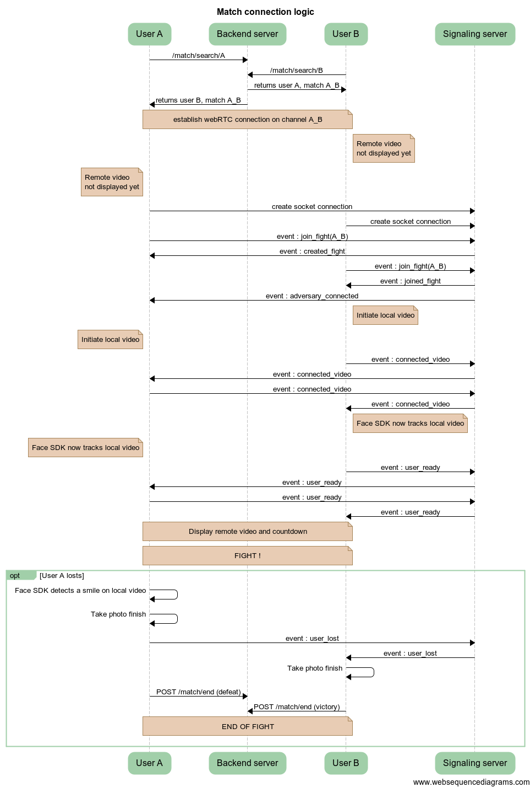

Contract of interface for the Facefight backend Entry points are, given the environment, the following:
Entry points for all the users authentication logic on Facefight.
Entry point in order to initiate a Facebook authentication. This method is called at the very beginning of the app launch. When requesting this route, the backend will be redirected to the Facebook app or web page in order for user to enter its facebook login informations. Once the login done, Facebook will redirect the frontend to the callback URL.
| Argument | Type | Value | Description |
|---|---|---|---|
| No entry argument for this method | |||
Callback URL called by Facebook once the login has been done. This method is called by Facebook once the login has been done. The backend sends back a profile page that contains the user's information. The profile page rendered by the backend has to be ignored as it is only for tests purposes for the moment. The main advantage of this method is that once called, it enrichs the session with the serialized user object.
| Argument | Type | Value | Description |
|---|---|---|---|
| No entry argument for this method : directly enriched by Facebook. | |||
Entry points for all match related logic.
Entry point for the matchmaking logic. This method should be called when the user clicks on the button on the embedded application. The request starts a research for matching adversaries. On the back-end side, it records the current user to a Redis list corresponding to its current category. Then it subscribes to a key being the user ID. Once the user ID has been removed from the list by a matching adversary, the request is notified and the front-end gets the response. TODO : set a timeout on this method, as for the moment it searches forever.
| Argument | Type | Value | Description |
|---|---|---|---|
| userId | String | userId as set in the session object by the authentication method | Should always be present insofar as every methods are only available if authenticated |
{
"_id" : "55100a442eb33fc41bdb5b60",
"ranking" : {
"category" : "Novice",
"score" : 0,
"defeats" : 0,
"draws" : 0,
"victories" : 0,
"matches" : 0
},
"local" : {
"password" : "$2a$08$839jtb/nMfIuCnph.Weca.yKASYH33Gs7LbzxcWamDGTL8rsPY/T2",
"email" : "p.braun@gmail.com"
},
"__v" : 0
}
Request indicating the end of a match. This request shoulld be triggered on both side given the following circumstances :
| Argument | Type | Value | Description |
|---|---|---|---|
| A json object passed into the request body and containing the following attributes : | |||
| user | String | userId of the current user as set in the session object by the authentication method | Should always be present insofar as every methods are only available if authenticated |
| adversary | String | userId of the adversary user as retrieved by the /match/search method | |
| date | Datetime | Date and time hen the match began | example : "2015-03-13 20:44:00" |
| duration | Integer | Duration of the fight in seconds | |
| result | String in ('victory','defeat','draw') | Result for the current user | |
| type | String in ('friends','world') | Type of the fight | |
{
"_id" : "5510073e2f1cc91434d49a72",
"date" : "2015-03-13T18:44:00Z",
"duration" : 34,
"result" : "defeat",
"type" : "friends",
"stake" : {
"value" : "beer",
"type" : "bet"
},
"points" : 200,
"score" : 1200,
"adversary" : {
"user_ref" : "5503492c382a52dc2760151b",
"category" : "Novice"
},
"user" : {
"user_ref" : "55034927382a52dc2760151a",
"category" : "Novice"
},
"__v" : 0
}
The returned object has the following attributes:
| Argument | Type | Value | Description |
|---|---|---|---|
| _id | String | Identifier of the match that has been done | |
| date | Datetime | Beginning date of the match | |
| result | String in ('victory','defeat','draw') | Result for the current user | |
| duration | Integer | Duration of the fight in seconds | |
| type | String in ('friends','world') | Type of the match, being a match with a friend or a facefight the world | |
| stake | Object | Stake of the match, if specified | |
| points | Integer | Points earned/lost by the current user during the match | |
| score | Integer | New score of the user | |
| adversary | Object | Object being the adversary for the current user during the match, contains two attributes : userId and current category | |
| user | Object | Object being the current user, contains two attributes : userId and current category |
Find below the sequence diagram of the match logic : 
Entry points for all notifications (push inapp) related logic.
Entry point for enabling the push inapp notifications on the current device. This method should be called at the initialisation step of the application, when it asks user for the right to send him push inapp notifications.
| Argument | Type | Value | Description |
|---|---|---|---|
| token | String | Device token to which the push inapp notifications will be sent. |
Code 200 + notifications enabled if all OK.
Code 500 + user not found or token not provided.
This method should be called when the user chooses to disable the notification system from facefight.
| Argument | Type | Value | Description |
|---|---|---|---|
| No entry argument | |||
Entry points for all the signaling done before and during a fight. Caution the host is not the same as for regular requests.
Lists all events possibly emitted by the signaling server, and which has to be caught and processed on the embedded application' side.
| Event name | Description | Associated data | Action to trigger on the front side |
|---|---|---|---|
| created_fight | Event indicating to the current user that he is the first to have created the fight channel. | A json object containing the following attributes:
|
None |
| joined_fight | Event indicating to the current user that he has successfully joined the fight. | A json object containing the following attributes:
|
None |
| full_fight | Event indicating to the current user the room he is trying to join is already full. This is an error case that shoulld not happen. | A json object containing the following attributes:
|
Throw an error, indicate the user there has been a problem |
| adversary_connected | Event indicating to the current user that his adversary has connected the fight (i.e. the channel prrivate room). Automatically triggered by the signaling server when the user is the second one to join the fight. This is done in order to inform the waiting user that the opponent is now here. | A json object containing the following attributes:
|
Inform the user his adversary is connected to the fight, then pass on to the calibrating phase. |
| connected_video | Event indicating to the current user that his adversary has connected his video on the remote device. This event should be send as soon as the video of the user is on, i.e. when Face analysis SDK begins to detect the video. | A json object containing the following attributes:
|
None |
| user_ready | Event indicating to the current user that his adversary is fully ready to fight, i.e. the remote device is connected to the private channel, the video is connected, the Face analysis SDK is now analyzing the frames and the fight can begin. | A json object containing the following attributes:
|
Starts the counter 3,2,1... and display remote video of the adversary |
| user_lost | Event indicating to the current user that his adversary hhas lost, i.e. a smile has been detected by the SDK on the remote video. | A json object containing the following attributes:
|
Take the finish picture, stop the fight then send the ending match request. |
Lists all eventswhiwh have to be send to the signaling server from the client, i.e. the embedded application.
| Event name | Description | Associated data | When to trigger ? |
|---|---|---|---|
| join_fight | Event indicating to the signaling server that the user needs to create/join the fight identified by the room namme in the associated data. The server should respond with one of the three events : created_fight, joined_fight, full_fight. | A json object containing the following attributes:
|
Just after the /match/search request has successfully ended, when local device fetches the fight identifier |
| connected_video | Indicates to the signaling server and the adversary that the video is now connected on the local device, and that the calibration phase should start. | None. | As soon as the face analysis SDK detects the first frame of the local video. |
| user_ready | Indicates to the signaling server and the adversary that the video is now calibrated and that the fight could start regarding the local user. | None | As soon as the face analysis SDK starts to analyse the frames. |
| user_lost | Indicates to the signaling server and the adversary that the user has lost by smiling or looking elsewhere. | When the corresponding event is caught by the face analysis SDK. |